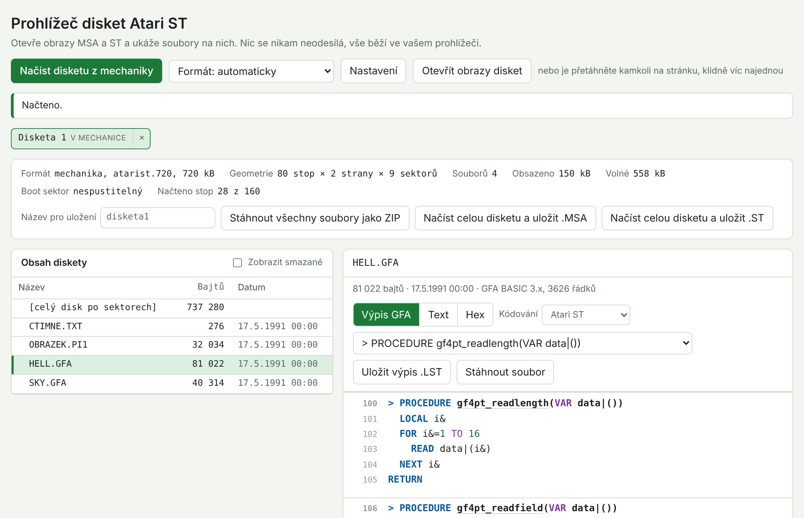
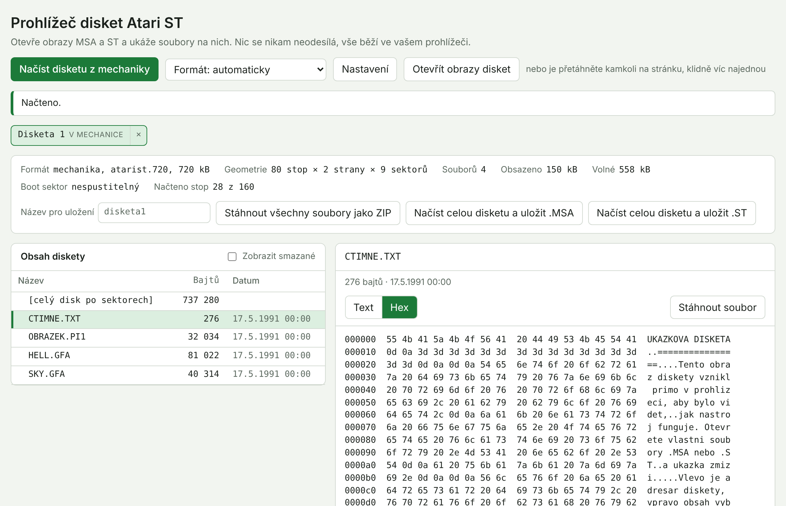

ST disketa
Atari ST floppy browser for Greaseweazle
User manual

Atari ST floppy browser for Greaseweazle
User manual
With a box of Atari ST floppies and a Greaseweazle, the usual routine is to image every disk to an MSA or ST file first and only then look inside with an emulator. That takes time, and most disks are not wanted in full.
ST disketa works the other way round. It behaves like the Atari itself: insert a disk and see what is on it.
| What you want | What is read from the disk | How long it takes |
|---|---|---|
| see what is on the disk | track 0 and the tracks holding subdirectories | a few seconds |
| view or download one file | only the tracks that file occupies | depends on file size |
| a full image or all files | the rest of the disk | like a normal full read |
Tracks that were read once are not read again. If you look at a few files and then decide to save the whole image, only the missing part is read.
Files can be viewed directly: text, pictures, hex dump and GFA BASIC programs. No emulator is needed.
| Item | Note |
|---|---|
| a Greaseweazle with a 3.5" floppy drive | any version the gw program can drive |
| Greaseweazle Tools | gw.exe (Windows) or gw (Linux); from github.com/keirf/greaseweazle |
| Python 3.8 or newer | from python.org; no extra packages are installed |
| a web browser | Chrome, Edge or Firefox |
the file st_disketa.py | the whole program is this single file |
gw info should print the model and firmware version.st_disketa.py anywhere, for example next to Greaseweazle Tools.python st_disketa.pyOn Windows
py st_disketa.py works too.http://127.0.0.1:8737/ opens in the browser. Leave the command prompt window open, the program runs in it. Stop it with Ctrl+C.gw is not found, Nastavení (Settings) opens straight away. Enter the path to gw.exe and save (chapter 8).The program looks for gw in the saved settings, in its own folder and on the system PATH.
When first opened, the page shows a small sample disk so you can try the controls without a drive.

| Part | Meaning |
|---|---|
| status bar | what is happening; errors are shown in orange |
| disk tabs | each disk gets a tab marked v mechanice (in the drive) or vyjmuta (removed) |
| disk facts | Formát, Geometrie, Jmenovka (label), Souborů (files), Obsazeno (used), Volné (free), Načteno stop (tracks read) |
| Obsah diskety (disk contents) | the directory; click a folder to expand or collapse it. Columns: Název (name), Bajtů (bytes), Datum (date) |
| right-hand pane | contents of the selected file |
Formát: automaticky (automatic) reads the boot sector and works out the number of sides and sectors per track. Choose a format by hand only when the boot sector does not describe the format or is damaged.
| Choice | Disk |
|---|---|
| 720 kB | 2 sides, 9 sectors; the most common format |
| 360 kB | 1 side, 9 sectors; older single-sided disks |
| 800 kB, 400 kB | 10 sectors per track |
| 880 kB, 440 kB | 11 sectors per track |
Swap the disk and click Načíst disketu z mechaniky again. The new disk gets its own tab. The previous tab stays open, marked vyjmuta, with whatever was read from it. Files you did not open can no longer be read.
Click a file in the directory. The tracks it occupies are read and the file is shown on the right. The program picks a view itself; switch it with the buttons above the contents.
| View | When it is offered |
|---|---|
| Text | always; default for text files |
| Hex | always; default for programs and other binary files |
| Obrázek (picture) | Degas (PI1–PI3, compressed PC1–PC3), NEOchrome (NEO), Doodle (DOO) |
| Výpis GFA (GFA listing) | GFA BASIC 3.x programs (chapter 6) |
Text and GFA listings have a Kódování (encoding) selector. The default is the Atari ST character set. For Czech and Slovak texts try Kamenických, Windows-1250 and ISO 8859-2.
PRG, TOS, ACC …) the sizes of code, data and BSS are shown..GFA files are stored in a tokenised form that normally only GFA BASIC can read.
ST disketa turns them into a readable listing itself.

| File | What you get |
|---|---|
| GFA BASIC 3.0, 3.5 and later | a full listing |
| GFA BASIC 1.x and 2.x | a hex dump and a note that this version is not supported |
| a program saved with protection (PSAVE) | a listing with placeholder variable names such as v2_1A; the real names are not in the file |
| a line with INLINE data | the INLINE command followed by a note giving the data length |
| Button | What it saves | What has to be read |
|---|---|---|
| Stáhnout soubor (download file) | the selected file, unchanged | nothing more, the file is already loaded |
| Uložit jako PNG | the picture shown, 640 × 400 pixels | nothing more |
| Uložit výpis .LST | the GFA BASIC listing | nothing more |
| Stáhnout všechny soubory jako ZIP (all files as ZIP) | all files with folders and original dates | the tracks holding files |
| Načíst celou disketu a uložit .MSA (read whole disk, save .MSA) | a disk image in MSA format | all remaining tracks |
| Načíst celou disketu a uložit .ST | a disk image in ST format | all remaining tracks |
Files go wherever your browser saves downloads. Type the name for the image and the ZIP into Název pro uložení (name for saving). It is pre-filled with the volume label if the disk has one.
While the whole disk is being read, Načteno stop shows the progress.
The Nastavení button opens a panel with three fields. After a change click Uložit nastavení (save settings).

| Field | What to enter |
|---|---|
| Cesta ke gw (path to gw) | the file gw.exe or the folder it is in, e.g. C:\Greaseweazle\gw.exe. Empty: the program searches itself. |
| Port | the Greaseweazle serial port, e.g. COM5 or /dev/ttyACM0. Ports found on the computer are listed under the field. Empty: gw finds the port itself. |
| Mechanika (drive) | same value as the --drive option of gw: A or B with a PC cable, 0 to 2 with Shugart wiring. |
Otestovat spojení runs gw info and shows its output. The test uses the saved values,
so save first.
Settings are stored in .st_disketa.json in your home folder and loaded on the next start.
Not required. When given, they override the saved settings.
| Option | Meaning |
|---|---|
--gw PATH | path to gw |
--device PORT | serial port |
--drive X | drive |
--port NUMBER | port of the local page, default 8737 |
--no-browser | do not open the browser |
.MSA and .ST images you already have can be viewed just like a disk in the drive.
Click Otevřít obrazy disket (open disk images) or drop the files anywhere on the page. Several can be
opened at once; each gets its own tab.
st_prohlizec.html, which is part
of the project, in a browser.
When a disk cannot be read, a tab Nečitelná disketa (unreadable disk) opens with the reason and the last
lines printed by gw. Zkusit načíst znovu tries again.

| Message or symptom | What to do |
|---|---|
| Program gw nebyl nalezen (gw not found) | enter the path to gw.exe in Settings and save |
| Greaseweazle nebyl nalezen (Greaseweazle not found) | check the USB cable; enter the port in Settings; try gw info |
| K portu není přístup (no access to the port) | Windows: close any other program using the port. Linux: join the dialout group and log in again. |
| V mechanice není disketa, nebo se netočí (no disk, or it does not spin) | push the disk fully in; check drive power and the drive setting |
| Mechanika nenašla stopu 0 (track 0 not found) | wrong drive selected (A/B) or a reversed cable |
| Na první stopě se nepodařilo přečíst žádný sektor (no sector readable on the first track) | the disk is damaged, unformatted or in another format (Amiga, Mac). Retry, or clean the heads. |
| Souborový systém TOS/FAT nenalezen (no file system) | a game with a custom format or a damaged boot sector; browse it by sector |
| Boot sektor nepopisuje formát diskety (boot sector gives no format) | choose the format by hand and read the disk again |
| Nečitelné sektory na stopách … (unreadable sectors on tracks) | try reading the file again; removing and reinserting the disk sometimes helps |
| Pomocný program neodpovídá (helper not responding) | the window running st_disketa.py was closed; start it again and reload the page |
| The directory looks like another disk's | the disk was swapped without reading it again |
gw read directly with SCP or HFE output.st_disketa.py starts a small web server that listens on 127.0.0.1 only, that is,
for your computer alone. The page in the browser asks it for specific tracks.
gw read --format=atarist.720 --tracks=c=0:h=0.The file system, the MSA format, pictures and GFA BASIC are all decoded by the page itself. Nothing is sent outside your computer.
The version number is shown at the bottom of the page, in st_disketa.py and in the name of this manual.
| Version | What changed |
|---|---|
| 1.5 | First public release. Fix: programs from GFA BASIC 3.0 were shown only as unreadable text; they are now listed. |
| 1.4 | Version number on the page, stand-alone st_prohlizec.html, sources in src/, PDF manual. |
| 1.3 | Fix: with an unreadable disk the previous disk's contents stayed on screen. New "unreadable disk" tab, status bar at the top, a second, more thorough read attempt. Coloured GFA listing with line numbers and a procedure jump list. |
| 1.2 | GFA BASIC 3.x listing and saving as .LST. Licence changed to GNU GPL v2. |
| 1.1 | Path to gw, port and drive set on the page, connection test, list of ports. |
| 1.0 | Reading a disk straight from the drive: directory, file on click, image on request. Viewing MSA and ST images, text, hex, pictures. |
The program is free software under the GNU General Public License version 2 and comes with no warranty.
The full text is in the file LICENSE.
Author: Zdeněk Kotrba, 2026.